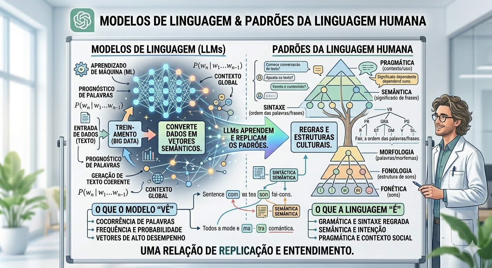
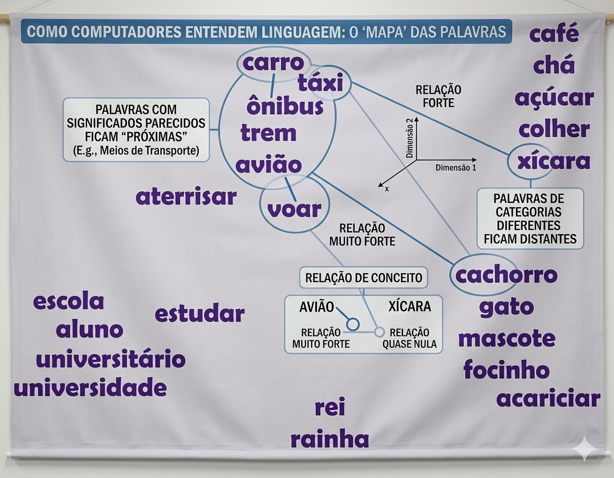
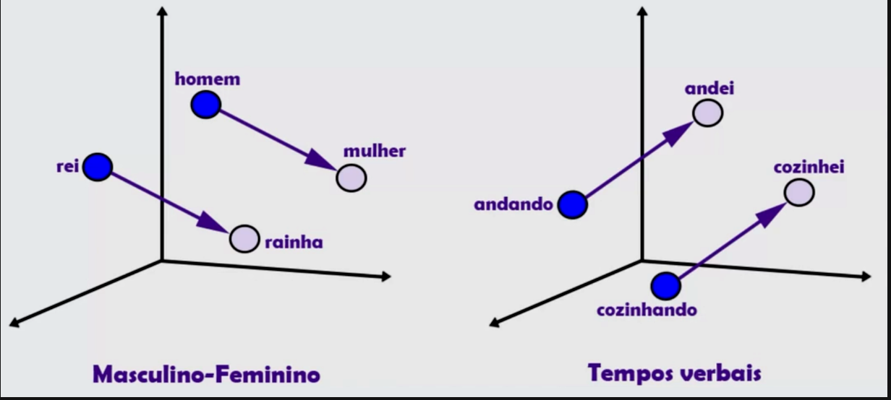
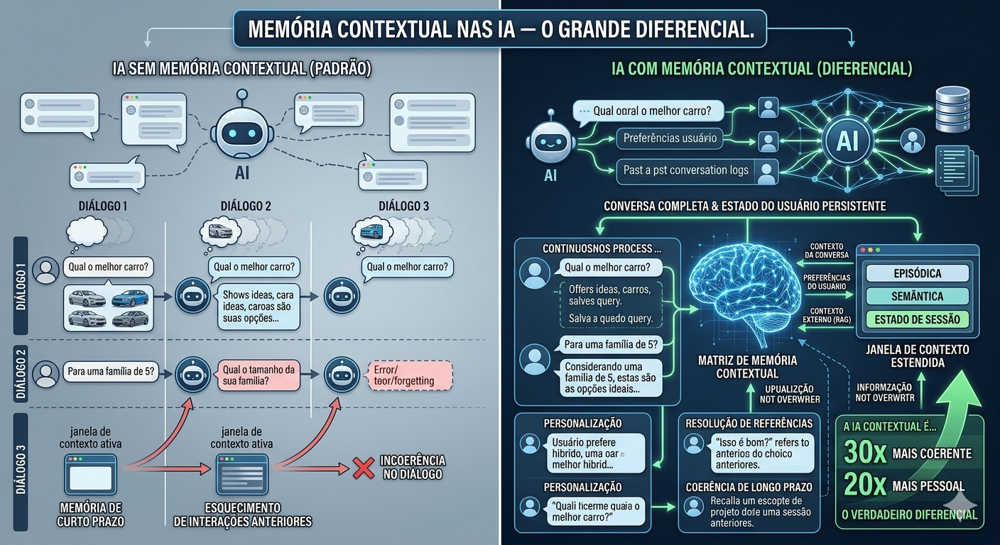
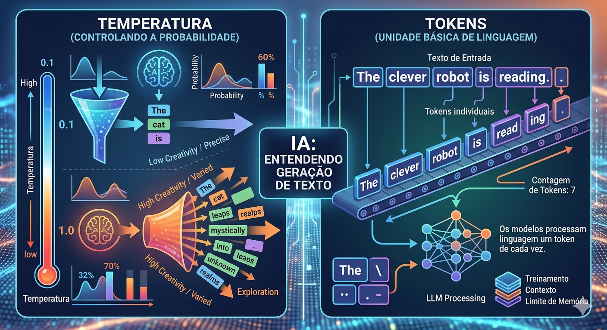

![]()
Bem-vindo ao módulo de Engenharia de Prompt. Ao contrário do que o nome pode sugerir, você não precisa saber programar para dominar essa habilidade. A engenharia de prompt é a arte de escrever instruções claras e eficazes para que os modelos de IA gerem exatamente o que você precisa.
Neste módulo, você vai entender por que algumas perguntas geram respostas ruins e outras geram respostas perfeitas — e vai aprender as técnicas que os melhores pesquisadores do mundo usam para extrair o máximo dessas ferramentas.
Antes de dominar a engenharia de prompt, é essencial entender como os modelos de linguagem funcionam por dentro. O que são os LLMs (Large Language Models)? Como eles aprendem com textos? Por que às vezes acertam e às vezes erram?
Vamos explorar conceitos como word embeddings, tokens, probabilidade de palavras e memória contextual — a base que explica o comportamento de ferramentas como ChatGPT, Gemini e Claude.
O coração deste módulo. Vamos aprender o que é a Engenharia de Prompt e quais são as técnicas e princípios mais importantes para criar o prompt ideal e obter as respostas desejadas dos modelos de linguagem.
Clareza e Especificidade
O princípio mais importante: quanto mais claro e específico o pedido, melhor a resposta.
Divisão de Tarefas
Separar problemas complexos em etapas sequenciais melhora a qualidade em cada parte.
Raciocínio Explícito
Pedir que o modelo explique o raciocínio antes da resposta reduz erros significativamente.
Justificativas
Solicitar explicações sobre as escolhas feitas aumenta a confiabilidade da resposta.
Algumas das técnicas mais poderosas de engenharia de prompt foram descobertas e documentadas em artigos científicos publicados pelas principais empresas de IA do mundo.
OpenAI
- GPT-4 Technical Report
- Chain-of-Thought Prompting
- DALL-E e GPT-4o
Google & Outros
- Gemini — Técnicas de raciocínio
- Anthropic (Claude) — Constitucional AI
- Mistral AI — Modelos eficientes
Vamos nos aprofundar nesses artigos para entender como as técnicas funcionam e como aplicá-las na prática — mesmo sem ser da área técnica.
Por fim, vamos explorar técnicas utilizadas por quem aplica os modelos de forma programática, via API e código. Essas técnicas são mais avançadas, mas igualmente relevantes para qualquer pessoa que queira entender o potencial completo dos LLMs.
Técnicas como few-shot prompting, RAG (Retrieval-Augmented Generation) e function calling serão apresentadas de forma acessível, com exemplos práticos que qualquer profissional pode aproveitar.
Ao final deste módulo, você será capaz de escrever prompts que realmente funcionam — não por tentativa e erro, mas porque você entenderá por que cada escolha faz diferença. Essa é a diferença entre usar a IA e dominá-la.
Para começar a usar o ChatGPT, você precisa criar uma conta gratuita na plataforma da OpenAI. O processo é simples e leva menos de dois minutos:
Após fazer o login, você verá a interface principal do ChatGPT. Ela é bastante simples: um campo de texto na parte inferior para digitar seus prompts e um menu lateral esquerdo com o histórico de conversas.
Agora, experimente este prompt simples para testar a ferramenta:
Olá! Me explique em uma frase o que é o ChatGPT.
O ChatGPT é um assistente de inteligência artificial desenvolvido pela OpenAI que usa modelos de linguagem avançados para conversar, responder perguntas, criar textos, resolver problemas e realizar diversas tarefas por meio de instruções em linguagem natural.
Além do ChatGPT, utilizaremos o Google AI Studio — o ambiente de teste (playground) do modelo Gemini, do Google. Ele é uma alternativa gratuita ao playground pago da OpenAI e é excelente para explorar recursos avançados de IA.
ChatGPT (OpenAI)
- Interface simples e intuitiva
- Versão gratuita disponível (GPT-4o)
- Versão Plus com mais recursos (paga)
- Ideal para conversas e tarefas do dia a dia
- Acesso pelo navegador em chatgpt.com
Google AI Studio
- Playground do modelo Gemini (Google)
- Totalmente gratuito com conta Gmail
- Permite ajustar parâmetros do modelo
- Ideal para testes e experimentações avançadas
- Acesso em aistudio.google.com
Neste item, você configurou seu ambiente de trabalho:
ChatGPT — criou sua conta, aprendeu a navegar pela interface e enviou seus primeiros prompts. Entendeu a importância do "New chat" para manter contextos separados.
Google AI Studio — conheceu a alternativa gratuita ao playground da OpenAI, acessível com qualquer conta Gmail e ideal para experimentações avançadas.

A ideia central por trás dos modelos de linguagem é simples: toda língua tem padrões. Palavras não aparecem aleatoriamente em uma frase — elas seguem regras gramaticais e estatísticas que o modelo aprende ao processar bilhões de textos.
Para ilustrar isso, veja como a mesma ideia ("eu gosto de pizza") se estrutura de formas completamente diferentes em três idiomas:
Um modelo de linguagem aprende exatamente esses padrões ao ser treinado com enormes volumes de texto: que em português o verbo "gostar" é sempre seguido de "de", que em inglês não há essa exigência, que em turco o verbo vem no final. Ele aprende as regras sem que alguém precise ensiná-las explicitamente — apenas por exposição massiva aos dados.
Mas como exatamente um computador "aprende" padrões de linguagem? A resposta está em um conceito chamado word embeddings — representações numéricas de palavras que capturam seu significado e suas relações com outras palavras.
Em termos simples: cada palavra é convertida em um número (ou conjunto de números), e palavras com significados parecidos ficam "próximas" nesse espaço numérico.

Esse "mapa" permite ao modelo entender que "avião" e "voar" têm uma relação muito forte, enquanto "avião" e "xícara" quase não têm relação alguma. Veja na tabela abaixo uma representação fictícia dessas proximidades:
| Palavra de referência | Comparada com | Proximidade (0 a 1) | Interpretação |
|---|---|---|---|
| avião | voar | 0,95 | Relação muito forte |
| avião | trem | 0,78 | Ambos são transportes |
| avião | ônibus | 0,76 | Ambos são transportes |
| avião | abastecer | 0,61 | Relação funcional |
| avião | xícara | 0,09 | Sem relação |
| avião | focinho | 0,015 | Categorias opostas |
Um dos resultados mais surpreendentes da pesquisa em NLP foi descobrir que é possível fazer operações matemáticas com word embeddings e obter resultados com sentido semântico real.

O exemplo clássico que ilustra isso é o seguinte:
Isso significa que a diferença numérica entre os vetores de "rei" e "homem" é equivalente à diferença entre "rainha" e "mulher" — ambos os pares compartilham a mesma "distância de gênero" no espaço vetorial.
O mesmo acontece com tempos verbais:
Isso não foi programado manualmente — o modelo aprendeu essas relações automaticamente ao processar bilhões de textos. É exatamente essa capacidade de capturar relações semânticas complexas que torna os LLMs tão poderosos.
Com os padrões da linguagem aprendidos e os word embeddings configurados, o modelo está pronto para sua função principal: prever qual é a próxima palavra mais provável em um contexto.
Pense no preenchimento automático do celular — quando você digita "bom", o teclado sugere "dia", "tarde" ou "noite". Os LLMs fazem exatamente isso, só que em uma escala de conhecimento muito maior e com muito mais contexto disponível.
Vamos ver isso na prática. Envie o seguinte prompt ao ChatGPT para simular como o modelo funciona internamente:
Vamos simular como você funciona internamente. Para cada frase que eu escrever, liste as 5 palavras com maior probabilidade que você usaria para completá-la, junto com a probabilidade estimada de cada uma. Apenas as palavras e probabilidades, sem mais nada. Confirme se entendeu.
Entendi.
Agora envie a frase incompleta:
Eu gosto muito de inteligência artificial e quero trabalhar
com (45%) nessa (25%) na (20%) no (5%) em (5%)
A palavra "com" lidera com 45% de probabilidade. Agora adicione essa palavra e pergunte novamente:
Eu gosto muito de inteligência artificial e quero trabalhar com
isso (40%) ela (30%) desenvolvimento (15%) você (10%) projetos (5%)
Percebeu? A cada palavra adicionada, o modelo recalcula as probabilidades considerando o novo contexto. É um processo contínuo de predição — palavra por palavra — que gera respostas coerentes e contextualizadas.

Se os modelos de linguagem existem há décadas, o que tornou o ChatGPT e os LLMs modernos tão revolucionários? A resposta é: a capacidade de manter o contexto de uma conversa inteira.
Modelos anteriores processavam apenas uma frase de cada vez. Os LLMs modernos mantêm toda a conversa em memória — cada pergunta, cada resposta, cada detalhe mencionado anteriormente. Isso os transforma de simples completadores de texto em assistentes de verdade.
Veja este exemplo na prática. Envie ao ChatGPT:
Qual era o esporte do atleta Rogério Ceni?
Rogério Ceni foi um jogador de futebol brasileiro. Ele é amplamente conhecido por sua carreira como goleiro, especialmente no São Paulo Futebol Clube, onde se destacou não apenas por suas habilidades defensivas, mas também por ser um exímio cobrador de faltas e pênaltis, marcando mais de 130 gols ao longo de sua carreira.
Agora, sem mencionar o nome dele, pergunte sobre sua carreira:
Qual foi o título mais relevante da carreira dele?
O título mais relevante da carreira de Rogério Ceni é, provavelmente, a conquista do Mundial de Clubes da FIFA em 2005 com o São Paulo Futebol Clube. Nesse torneio, Rogério Ceni teve uma atuação decisiva, especialmente na final contra o Liverpool, onde fez defesas cruciais e ainda foi eleito o melhor jogador da competição. Essa vitória solidificou sua reputação como um dos maiores goleiros da história do futebol.
O modelo entendeu que "dele" se referia a Rogério Ceni — sem precisar que você repetisse o nome. Ele manteve o contexto da conversa anterior e usou essa informação para responder com precisão.
Neste item, você construiu a base teórica para entender os LLMs:

Vimos que os modelos preveem a próxima palavra com base em probabilidades. Mas será que o modelo sempre escolhe a palavra com a maior probabilidade?
Na verdade, não. Existe um parâmetro chamado temperatura que controla exatamente isso: a probabilidade de o modelo escolher uma palavra diferente da mais provável. Esse recurso foi criado porque, quando o modelo sempre escolhia a opção mais provável, as respostas ficavam robóticas e previsíveis demais — sem os "truques" que nós, humanos, usamos ao escrever.
🔵 Temperatura 0
Sempre escolhe a palavra mais provável. Respostas consistentes e previsíveis — ideal para tarefas técnicas e precisas.
🟢 Temperatura 1 (padrão)
Equilíbrio entre precisão e criatividade. Respostas variadas, mas coerentes — o melhor ponto de partida para a maioria dos casos.
🔴 Temperatura 2
Alta imprevisibilidade. Pode gerar respostas criativas, mas também erros, símbolos aleatórios ou incoerências.
Para entender a temperatura na prática, use o Playground da OpenAI ou o Google AI Studio e ajuste o parâmetro "Temperature". Repita o mesmo prompt várias vezes com valores diferentes e observe como as respostas mudam:
Complete a frase a seguir: Eu gosto muito de comer…
Eu gosto muito de comer chocolate.
Eu gosto muito de comer pizza. Eu gosto muito de comer chocolate. Eu gosto muito de comer macarrão.
pizza! É uma delícia, não acha?
sorvete nos dias quentes e pipoca quando assisto a filmes. [Ou erro do servidor — o modelo não consegue processar combinações de probabilidade muito baixa]
Falamos bastante sobre "palavras" até aqui, mas os modelos de linguagem não trabalham com palavras completas — eles trabalham com tokens, que são pedaços de texto menores que o modelo usa para processar tudo.
Pense assim: antes de "ler" qualquer texto, o modelo o fatia em pedaços. Cada pedaço é um token. Às vezes um token é uma palavra inteira. Outras vezes é só uma sílaba, um prefixo, ou até um sinal de pontuação.
Eu est ou aprendendo
4 tokens para 3 palavras — "estou" foi dividido em "est" + "ou" porque esses fragmentos aparecem em muitas outras palavras do português.
O modelo aprende esses fragmentos porque eles são reutilizáveis: o fragmento "est" aparece em "está", "estamos", "estudo", "estrada". O fragmento "in" aparece em "infeliz", "incrível", "indivisível". Em vez de memorizar cada palavra do zero, o modelo reutiliza esses blocos — é mais eficiente.
Uma das descobertas mais interessantes sobre tokenização é que o mesmo conteúdo ocupa quantidades muito diferentes de tokens dependendo do idioma. Isso acontece porque os modelos são treinados principalmente em inglês — idiomas menos representados geram mais tokens para expressar a mesma ideia.
Veja a comparação com a mesma frase em três idiomas usando o tokenizador da OpenAI:
| Idioma | Caracteres | Tokens | Por quê? |
|---|---|---|---|
| 🇺🇸 Inglês | 135 | 28 | Língua dominante no treinamento — palavras inteiras viram tokens únicos |
| 🇧🇷 Português | 152 | 37 | Menos representado; palavras longas são divididas em sub-palavras |
| 🇬🇷 Grego | 151 | 113 | Muito pouco representado — quase cada letra vira um token separado |
Nesta aula, descobrimos como modelos de linguagem de grande escala compreendem e geram texto:
- Os modelos são treinados com enormes volumes de texto e criam compreensões matemáticas sobre linguagem, semântica e significado.
- Quando enviamos uma instrução, o texto é primeiro dividido em tokens e, em seguida, convertido em embeddings — representações numéricas que capturam significado.
- O modelo gera uma palavra por vez, calculando qual próxima palavra é a mais provável no contexto.
- A temperatura controla se o modelo escolherá a palavra mais provável (resposta robótica) ou palavras com menor probabilidade (respostas mais criativas e variadas).
Envie o prompt abaixo para o ChatGPT e, após a confirmação, experimente com diversas frases incompletas para observar como as probabilidades mudam conforme o contexto:
Vamos simular como funciona o ChatGPT. Para cada frase que eu escrever, você deve listar as 5 palavras com maior probabilidade que você usaria para completá-la, junto com a probabilidade de cada uma. Combinado? Apenas as palavras e probabilidades, sem mais nada. Me diga se entendeu.
Após a confirmação do modelo, envie qualquer frase incompleta e observe as probabilidades sugeridas. Experimente frases de contextos diferentes — técnico, cotidiano, criativo — e perceba como as probabilidades mudam.
Nesta aula você completou os fundamentos teóricos necessários para criar prompts eficazes. Você agora é capaz de: